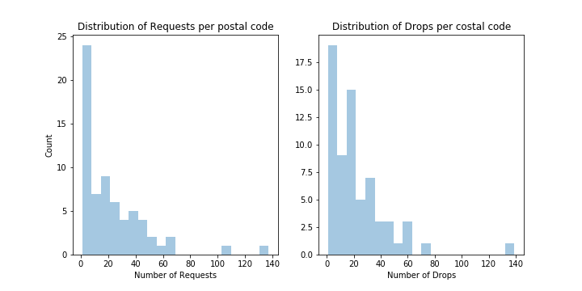
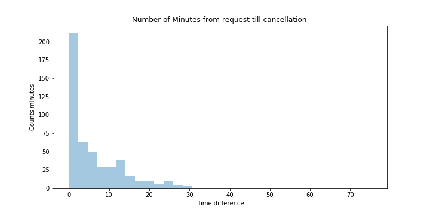
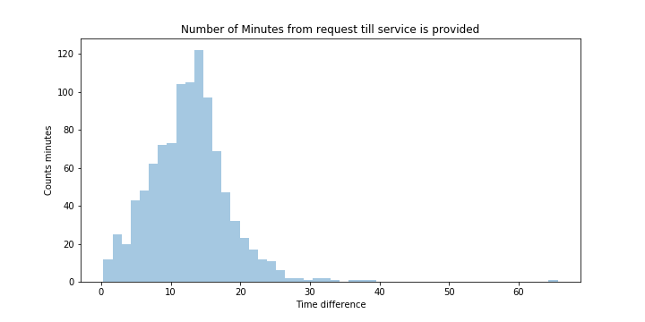
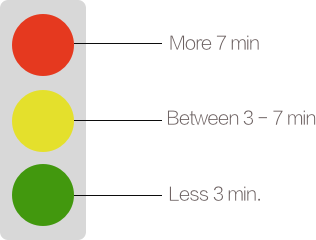
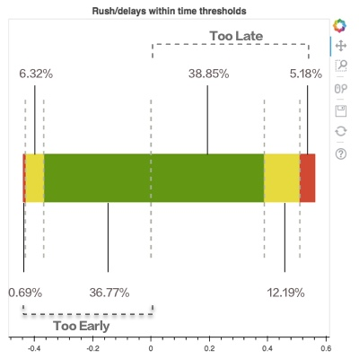
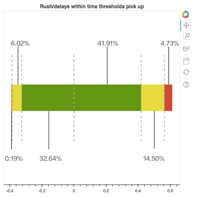
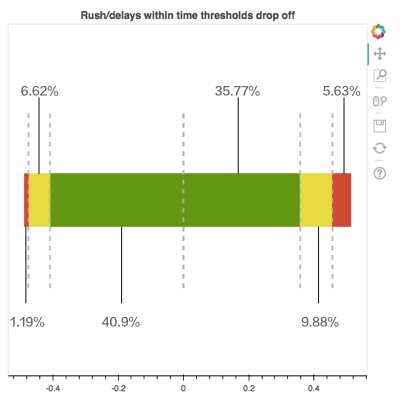
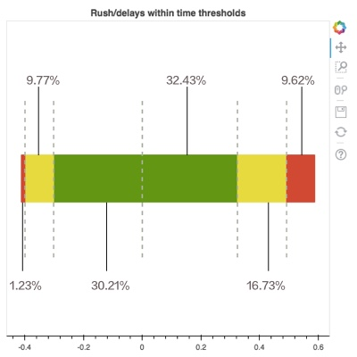
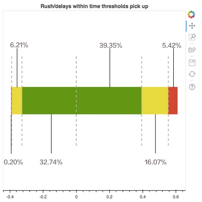
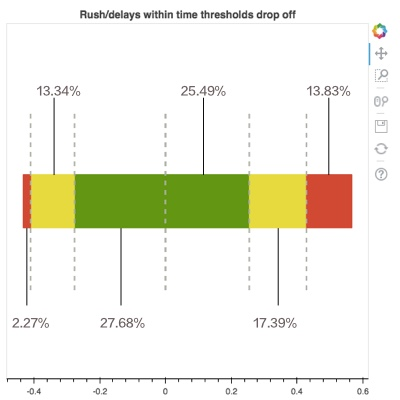

Estimated Time of Arrival vs. Actual Time of Arrival
José Coto
The data
- 2 data sets: pick ups drop offs and bookings.
- 3 days data of ally shuttle operation in June 2017.
- Data validation process.
- See repository for further analysis and code.
Exploratory Analysis
[Optional / Below]
Analyzing Daily Demand
- Service covers approx. 65% requests.
- Highest peak: Saturday.
- Different patterns when looking hour data.
Hour/Day Total Requests
- Service has moments of high peaks (see Friday)
- High demand difficult to meet.
- Lower demand also sometimes difficult to meet (See Sunday 14:00).
Geographical Analysis - Postal Codes

- Distributions of pick ups and drop offs have almost same shape.
- Correlation is quite high: 0.912.
- Indication: ally is concentrated on some postal codes / routes.
Geographical Analysis - Postal Codes
- Pick up/drop off follow same spatial pattern.
- Cluster in city center's postal codes.
Cancellations


- Cancellations tend to occur in the beginning of service.
- Some still happen after several minutes have passed.
- Users are willing to wait for service.
ETA vs. ATA
Introducing an Indicator
Traffic Light Indicator

- Takes differences between ETA and ATA and classifies them in green/yellow/red regions.
- Ideally all differences in green!
- Advantages: Intuitive, easy to understand, robust to outliers.
- Problems: Where should thresholds be?
Order of Analysis
- General differences for last ETA reported to user
- Pick up differences for last ETA
- Drop off differences for last ETA
- General differences for first ETA reported to user
- Pick up differences for first ETA
- Drop off differences for first ETA
- Discussion
General differences for last ETA reported to user

- Most of differences (75%) are within green ;)
- Some room for improvement in yellow area (especially for late arrivals).
Differences for last ETA reported - pick ups

- Yellow region grows (now 20%).
- Yellow and red regions for late arrivals make up almost 20% of all pick ups.
Differences for last ETA reported - drop offs

- Percentages are better than pick ups.
- Most of improvement due to arrivals sooner as expected (40.9%).
General differences for first ETA reported

- Green region drops to 62%.
- Big increase in yellow region due to service delays.
Differences for first ETA reported - pick ups

- Green area is still high!
- Yellow area only 2% higher as when considering last reported time.
- This is not the culprit of the changes...
Differences for first ETA reported - drop offs

- Barely passes 50% of services within the green area.
- Most of yellow and red areas come from delays in service.
- Still room for improvement.
Summing up
- ETA and ATA differences are mostly within green regions.
- Differences are more pronounced when considering first ETA reported to user.
- First drop off ETA presents more differences.
- Giving an accurate time frame service essential for user and ally operations.
However...
- Small data set.
- Conclusions may be subject to seasonality.
- Finding appropriate thresholds linking to cancellation data.
For whom is this useful? / Tentative plans of action
- Operations: can we improve ETA calculation?, how about first ETA drop off reported?
- Market research: can we find appropriate thresholds based on user experience?, can we conduct a survey?
- Design: how can we appropriately communicate uncertainty embedded in ETA?,
can this lead to better user experience?
- Growth: how would increasing our fleet impact on thresholds?,
which level should we reach in thresholds to consider extra investment justified?